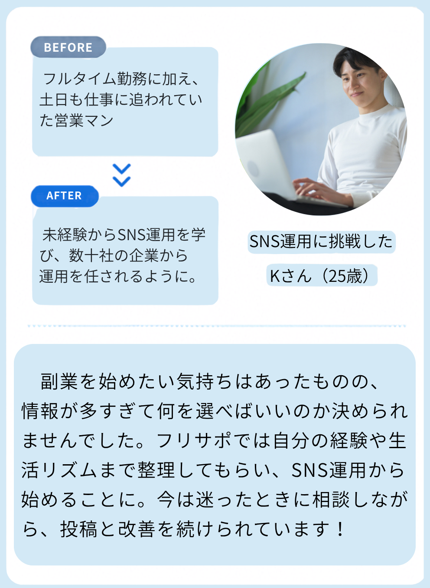
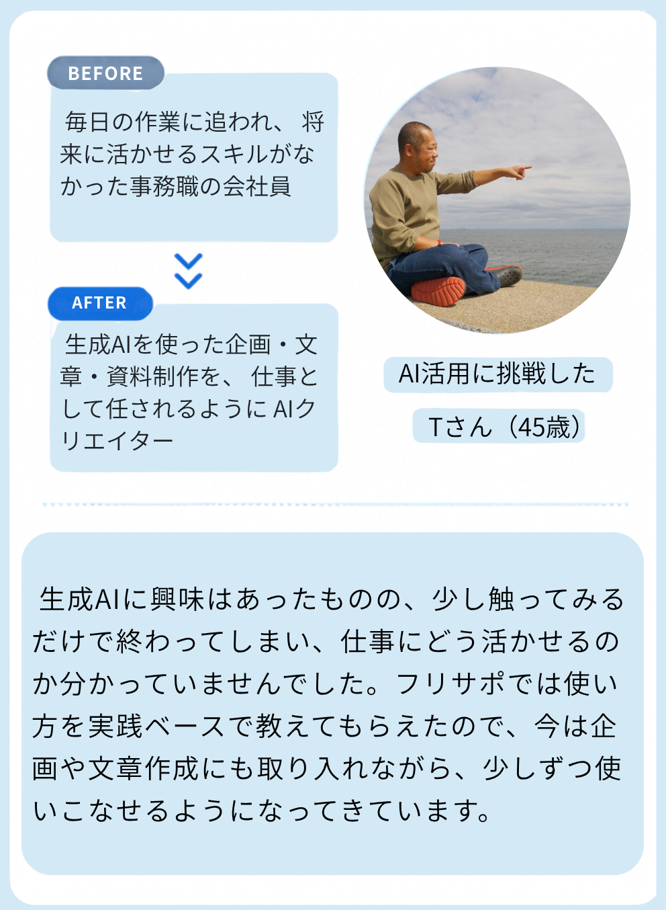
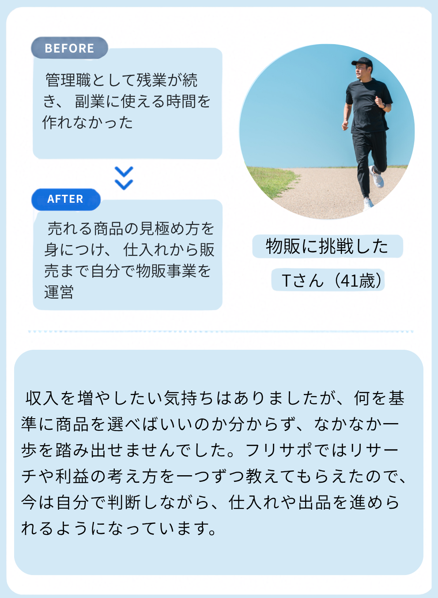

01自分に合った分野から
自分に合った分野から
始められる
流行だけで選ばず、経験や興味、目標に合わせて分野をご提案。自分に合った選択肢と進め方を整理してからスタートできます。
ABOUT US
「何を始めるか」から、
ひとりにしない。
フリサポは、自分らしい働き方を目指す
完全伴走型のフリーランス育成スクールです。
SNS運用・動画編集・生成AI活用・物販。
あなたの経験や興味、目標に合った分野を一緒に見つけ、学習から実践まで個別にサポートします。
FIRST STEP
01 /情報が多すぎて、
何を選べばいいかわからない。
02 /仕事と両立しながら、
続けられるか不安。
03 /ひとりで勉強しても、
仕事につながるか心配。
まずは、あなたの「今」と「これから」を
整理するところから。
FIND YOUR SKILL
経験や興味、目標に合わせて。
自分に合った分野から始められます。
SOCIAL MEDIA
VIDEO EDITING
GENERATIVE AI
ONLINE COMMERCE
学習内容や受講プランの詳細は、無料ロードマップ作成会でご案内します。
WITH YOU, ALL THE WAY
フリサポが大切にする、4つのサポート。
流行だけで選ばず、経験や興味、目標に合わせて分野をご提案。自分に合った選択肢と進め方を整理してからスタートできます。
知識やスキルの習得から、実際に手を動かす段階まで。進捗やつまずきに合わせて、次にやることを一緒に整理します。
各分野で実践経験を持つ講師がサポート。現場で役立つ考え方や進め方を、あなたの目標に合わせて具体的にお伝えします。
受講生同士で相談・交流できるコミュニティ。悩みや学びを共有し、仲間から刺激を受けながら取り組めます。
どのスキルが自分に合うか、まだわからなくても大丈夫。
REAL STORIES




※掲載内容は個人の体験談です。成果を保証するものではありません。
HOW TO START
あなたに合った一歩を、オンラインで一緒に整理します。
お仕事や生活スタイル、
興味のある分野を回答。
フリサポ公式LINEで
診断結果を確認してください。
ご都合のよい日時を選び、
無料相談をご予約ください。
あなたに合った分野や
進め方を一緒に整理します。
FAQ
気になることを、
ひとつずつ。
はい。オンラインで個別に進められるため、本業や家庭の予定と両立しながら、ご自身のペースで取り組めます。無料ロードマップ作成会では、今の生活スタイルに合わせて、無理のない進め方や学習時間の作り方を一緒に整理します。
基本的な操作を学べる内容も用意しており、未経験の方も学習を始められるようサポートしています。WebやSNSの仕事が初めての方も、段階に合わせて進められます。
未経験の方もご参加いただけます。必要な知識やスキルを基礎から順番に学べるカリキュラムを用意しています。特別な資格や経験は必要ありません。
無料ロードマップ作成会は、スマートフォンやタブレットでもご参加いただけます。受講開始後の学習や実践には、操作のしやすさや学習効率の面からパソコンの使用をおすすめしています。
いいえ。無料ロードマップ作成会は、現在の状況や悩みを整理し、フリサポの内容や進め方がご自身に合うかを確認する機会です。無理に入会をおすすめすることはありません。情報収集の場としてもご参加ください。
LET'S TAKE THE FIRST STEP
まだ、やりたいことが決まっていなくても大丈夫。
まずは無料ロードマップ作成会へ。